Instagram Video Studio — user guide
This guide covers the V2 visual editor and its command line video generator. It uses the built-in Tony T · September Mix Motion template for the examples. The screenshots were captured from the running app with docshots.
1. Start the studio
From a terminal, open the v2 folder and start the local web app:
cd /Users/antonyjoyce/git-repos/instagram-video-studio/v2
npm install
npm run devOpen the local address printed by Vite, usually http://localhost:5173. Keep that terminal running while you edit. A recent Chromium-based browser is the safest choice for MP4 export with audio. The local server also supplies FLAC and photo conversion and the final audio/video duration alignment; those operations use FFmpeg when needed. If FFmpeg is not on PATH, set FFMPEG_PATH before starting the server.
The editor stores reusable posts, templates, uploaded media, and autosave data in this browser's local storage. An MP4, screenshot, or downloaded JSON is saved to your computer when you explicitly download it. Browser storage is not a substitute for keeping an exported copy of important projects.
2. Find your way around
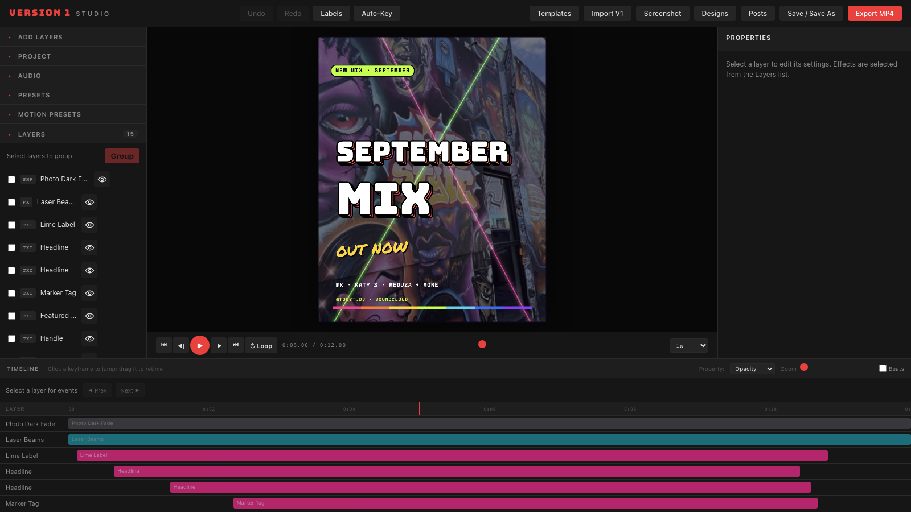
| Area | What it does |
|---|---|
| Top toolbar | Open templates, posts and designs; save, capture a still image, or export a video. Labels shows layer names on the canvas. Auto-Key changes how property edits are timed. |
| Left sidebar | Expand Add layers, Project, Audio, Presets, and Motion presets. The Layers section lists the objects in the current project. Use each heading to roll a section up or down. |
| Centre canvas | Shows the current video frame. Select a movable layer to see its outline; drag it to change its position. Full-frame effects have settings in Properties rather than a draggable box. |
| Right Properties panel | Edits the selected layer. Timing and transform are separate from that layer's text, image, shape, video, effect, or group settings. |
| Playback bar | Play, pause, step frame by frame, jump to either end, scrub, toggle Loop, and change preview speed. |
| Bottom timeline | Shows each layer's visible span, animation keyframes, event buttons, and the current playhead. |
The canvas scales to fit the editor window; the project's pixel dimensions are shown in Project settings. Selecting a row in Layers normally jumps the playhead to the first time that layer is visible. This is useful when a layer starts later in the video.
3. Make your first video
This sequence produces a reusable post and an export without needing a JSON file:
- Click Templates and open Tony T · September Mix Motion.
- Drag the playback scrubber to about five seconds to see the finished composition. Press Space to watch the entrances and exits.
- In Layers, select a headline, label, date tag, or details layer. Edit its text in Properties. Replace placeholder names, venues, dates, links, and calls to action.
- Open Project to confirm the name, video duration, and canvas format. Use Choose & crop photo… if you want a different background.
- Open Audio, choose your WAV, MP3, or FLAC file, and decide whether to keep or scale the existing animation times.
- Press ↻ Loop and play through the boundary several times to hear the transition from the end of the audio back to its beginning.
- Click Save / Save As to keep an editable post or template in this browser.
- Click Export MP4, choose a format, and start the export. Inspect the downloaded file before posting it.
Keep the full caption, listening link, and hashtags in your social post. The on-screen text works best as a short, readable announcement.
4. Templates and designs
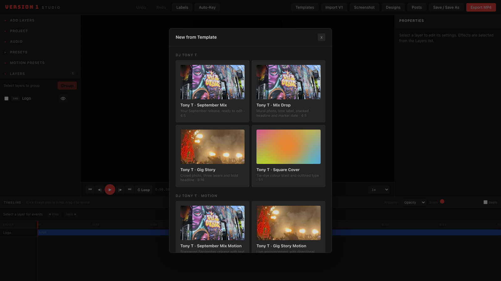
Click Templates for ready-made projects. The DJ Tony T category contains simple, mostly static layouts for a September Mix, Mix Drop, Gig Story, and Square Cover. The DJ Tony T · Motion category adds staged entrances and exits. Other categories contain event, music, countdown, and branding examples. Opening a template places its layers, timings, background, and canvas format in the editor; you can change them all.
The Tony T formats include 4:5 feed video (1080 × 1350), 9:16 story video (1080 × 1920), and 1:1 square video (1080 × 1080). Choose the format that matches where you plan to post. The Project section controls duration and FPS; the export dialog chooses an output preset.
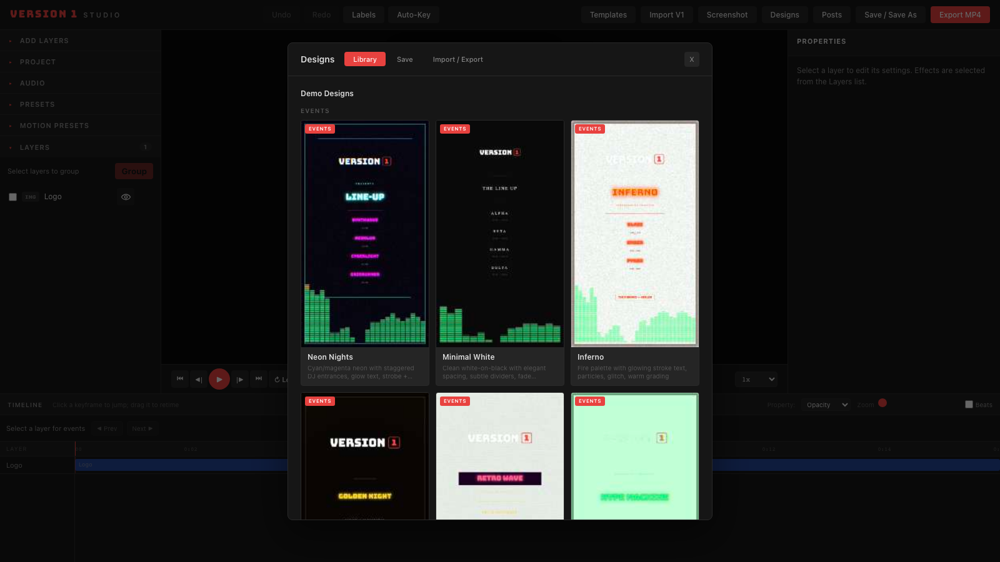
Designs is a separate library of example and locally saved configurations. Its Library tab opens a design, Save stores the current layout with a thumbnail, and Import / Export downloads or uploads editor project JSON. A saved Design is best treated as a layout preset: uploaded image, video, and audio asset references are stripped from that local Design entry. Use Save / Save As when you want a reusable post or template with its media in the browser library.
5. Layers and properties
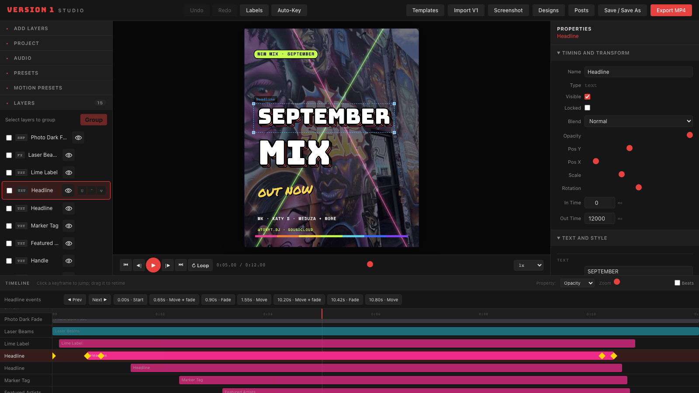
Select, arrange, hide, and lock
- Click a layer row to select it. Its editable settings appear on the right.
- Click the eye button to show or hide that layer. For example, hiding Photo Dark Fade removes that dark overlay from a Tony T template.
- Use the lock button to prevent accidental canvas edits.
- Use the row's up and down buttons to change drawing order. Layers later in the stack draw above earlier ones.
- Use Delete Layer at the bottom of Properties to remove the selected layer.
The dotted outline on the canvas marks the selected object's bounds; it is an editing aid, not part of the exported video. Effects such as lasers and spectrum may cover the whole frame and therefore have no ordinary selection box. Select their row in Layers and edit them in Properties.
Edit common settings
Timing and transform contains a layer's name, visibility, lock state, blend mode, opacity, X/Y position, scale, rotation, and In Time/Out Time. The time values are in milliseconds: 1000 means one second. Position values are relative to the canvas: 0 is the left or top edge, 0.5 is the centre, and 1 is the right or bottom edge.
Text layers have additional text and style controls, including colour, font, alignment, and headline effects. The font-size slider is paired with a number field so you can type an exact size. Other layer types show their own image, shape, video, or effect settings. Add layers offers shortcuts for text, Headline, Lime Label, Marker Tag, Mono Detail, shapes, media, and visual effects.
To use a Club Visuals capture as a moving background, choose Add layers → Video and select the downloaded MP4. With that layer selected, click Fill canvas in Video properties, then move the video layer below text and other foreground layers. The Club Visuals clip is silent; add soundtrack audio in the studio's Audio section.
Move several layers together
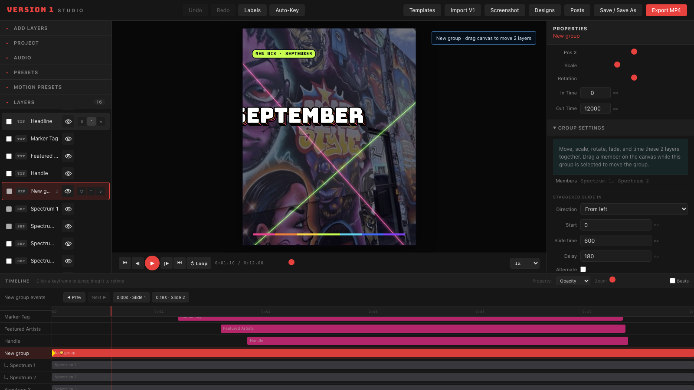
- Tick the selection boxes beside at least two ungrouped layers in Layers.
- Click Group. The new group is added to the list and selected.
- Rename the group if helpful. Change its position, scale, rotation, opacity, visibility, blend mode, or in/out time in Properties. These settings apply to its members together, while each member keeps its own settings.
- For a staggered entrance, choose From left, From right, From top, or From bottom in Group settings. Set Start, Slide time, and Delay in milliseconds. Alternate makes successive members enter from opposite sides.
- With the group selected, drag on the canvas to move it. The timeline shows a marker for each member's entrance; click one to jump to that point.
To separate the members again, select the group and click Ungroup (keep layers). A group may also receive a Motion preset, which animates the group's shared properties.
6. Background photos
Open Project in the left sidebar. You can set a solid BG Color, choose a bundled BG Photo, or click Choose & crop photo… for the visual picker.
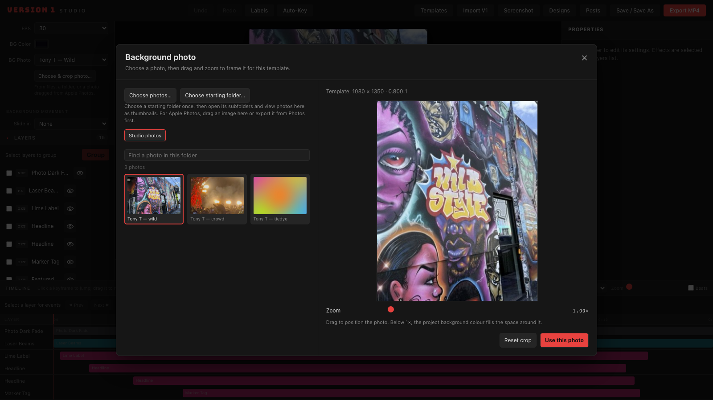
The picker starts with bundled Studio photos. Choose photos… imports one or more files; Choose starting folder… lets you choose a folder once and then browse its subfolders by thumbnail inside the picker. Search and pagination help with larger folders. Browser access to Apple Photos is indirect: drag an image from Photos into the picker or export it from Photos first, then select the exported file or folder.
The preview uses the project's aspect ratio. Drag the photo to frame the area you want and use Zoom to move in or out. Below 1×, the project background colour fills any exposed canvas. Reset crop returns to the initial framing. Click Use this photo to create a separate cropped JPEG for the project; the source file and Photos library remain untouched. The project stores the selected crop so it can be restored later.
For movement, use Project → Background movement → Slide in and choose a direction, start time, and slide duration. If a photo appears much darker or less colourful than expected, check whether Photo Dark Fade or a colour effect layer is visible. You can hide that layer with its eye button and compare again. MP4 encoding uses sRGB, so very wide-gamut source photos can still look slightly different from the live preview.
7. Animation and the timeline
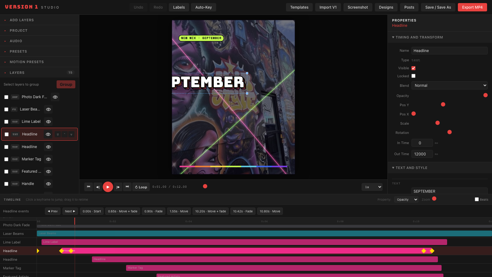
The horizontal bar on a layer's track shows when it can appear. The vertical playhead is the current time. The ruler shows seconds; the In Time and Out Time fields use milliseconds. Drag the scrubber or click the ruler to seek. Use the timeline Zoom control for more space between events, and Beats to show a BPM grid.
The strip above the tracks lists events for the selected layer. Click an event button to jump to it, or use Prev and Next. A keyframe appears as a coloured diamond. Choose the property to inspect from the timeline's Property menu; a layer can have separate opacity, position, scale, rotation, and sometimes font-size keyframes.
- Click a diamond: jump to its time.
- Drag a diamond: change its time on the track.
- Right-click a diamond: choose easing or delete that keyframe. The menu moves above the diamond near screen edges and scrolls on short displays.
- Double-click a layer's bar: add a keyframe for the property currently selected in the Property menu.
With Auto-Key off, changing a property updates its base value. Turn Auto-Key on to write a value at the current playhead time instead. To make an entrance, set an earlier position or opacity and a later visible value, then select an easing in the diamond menu. Motion presets provide ready-made entrances, exits, fades, scales, and emphasis animations for the selected layer or group.
8. Audio and loop testing
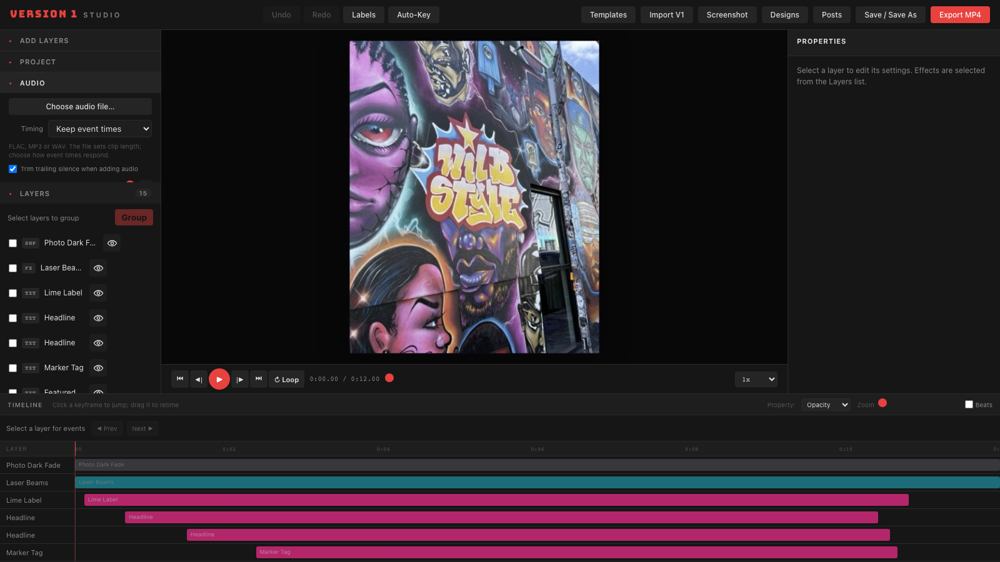
Open Audio and click Choose audio file…. WAV, MP3, and FLAC are accepted. If the browser cannot decode a FLAC directly, the local server uses FFmpeg to convert it. Wait for Loaded before exporting.
When adding audio, choose Timing first:
| Choice | Result |
|---|---|
| Keep event times | The project duration changes to the audio length, while existing animation events remain at their old times. |
| Scale all events | The duration changes and the existing visual event times stretch or compress in proportion. |
Trim trailing silence when adding audio uses the end of audible samples when a clear silent tail is present. If detected, the panel shows the audible and full-file lengths and lets you switch between them. The project's duration keeps fractional seconds; it is not rounded to a whole second. If you chose Keep event times earlier and later want to stretch the animation, enter the original length in Recalculate existing timeline and click Scale events.
Listen across the loop boundary
- Check that Project → Duration matches the intended loop period. Ideally, your source file contains exactly one complete loop and reaches that boundary.
- Click ↻ Loop beside Play, or press L. The active button is highlighted.
- Press Play and listen through the ending and the first beat several times. The transport wraps to the start while the button remains active. Click ↻ Loop again to turn it off.
- If there is a click or gap, check the source audio's start/end edit and whether the selected duration uses the full file or its audible length. Export one cycle and check that file too.
The preview's 1× speed is normal playback. Other speed choices also change audio playback speed. Loop affects preview playback; an export contains one project-length video, ready for a platform to repeat if desired.
The Audio panel also has volume, mute, BPM, beat offset, offset, trim, and fade fields. BPM and beat offset guide visual timing. The current transport preview plays the decoded source and does not audition the offset or trim fields; MP4 export applies the trim range and volume. The fade-in and fade-out fields are visible in the panel but are not currently applied by the MP4 export path. Verify any edit that uses these fields in the downloaded file.
9. Save and reopen work
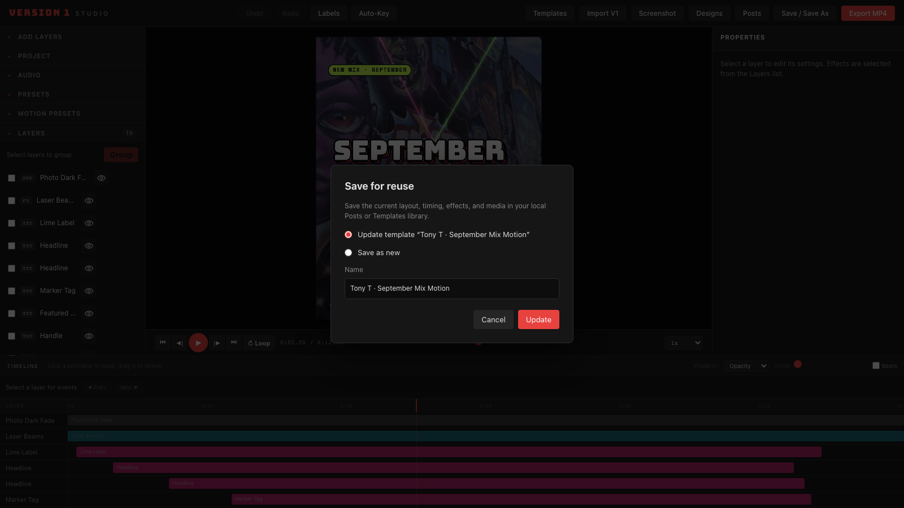
Click Save / Save As (or press Cmd+S on a Mac). If the project came from a post or template, you can Update that item or Save as new. For a new item, choose Posts or Templates, enter a name, and save. The browser library stores the editable project, thumbnail, and associated uploaded media. Open it again from Posts or Templates in the same browser profile.
Use Screenshot in the toolbar to download the current canvas frame as a PNG. Use Designs → Import / Export → Download JSON to download the editor project structure. A JSON file is useful for inspection or transfer, but referenced uploaded media may need to be supplied separately when moving it to another browser. A background crop stored in the project JSON is an exception because its data is embedded in the project settings.
10. Posts and JSON
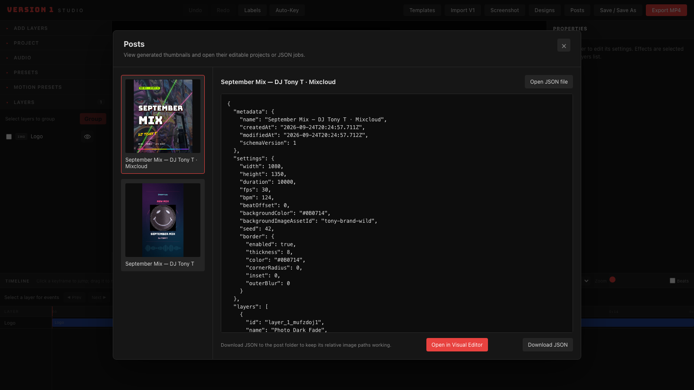
Click Posts to browse bundled and browser-saved posts by thumbnail. Select a post to inspect its JSON. You can edit the text in the JSON panel, Download JSON, or click Open in Visual Editor to work on its layers and timeline. The bundled September Mix entries provide examples of generated posts.
There are two JSON formats in the project:
| Format | Where it is used | What it supports |
|---|---|---|
| Editor project JSON | Designs export, saved posts/templates, and some bundled posts | The complete V2 project structure, including layers, effects, keyframes, and project settings. |
CLI job JSON (jobVersion: 1) | v2/examples/, v2/posts/<name>/job.json, and the command line tool | A smaller specification for text, still images, fades, and one audio track. |
The Posts dialog can show either format. Opening a CLI job in the visual editor converts its supported text and image layers; the preview may not match the FFmpeg render pixel for pixel. For a bundled CLI job with images, keep the job and its image files under v2/posts/<post-name>/ so the app can find them. Audio and custom font paths in a CLI job are not automatically loaded into the visual editor.
11. Export a video
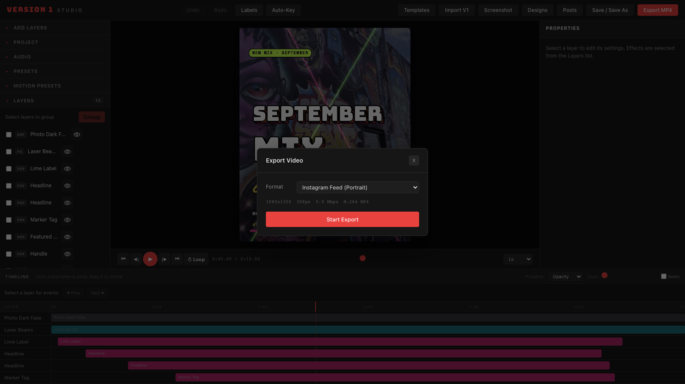
- Confirm the project duration and canvas format. Watch the complete animation once before exporting.
- Click Export MP4. Choose a preset that matches the destination format and check the displayed width, height, FPS, and bitrate.
- Click Start Export and wait for encoding and finalisation. The video downloads when complete. Cancel stops an in-progress export.
- Open the downloaded file, check text and photo framing, and listen at the beginning and end. If you plan to post it as a loop, replay the file from the start to check the join.
When WebCodecs is available, the editor exports H.264 MP4 and can include loaded audio. On a browser without the required support, the dialog offers a WebM fallback; audio export requires WebCodecs. For an MP4 with audio aligned to the exact project duration, keep the local Vite server and FFmpeg available during export. The editor reports an error if required audio or conversion tools are missing.
12. Generate a video from the command line
An AI assistant can create a small JSON job, validate it, and render a video without opening the visual editor. The detailed format is in Generate post videos from JSON, with friday-lineup.json as an example.
From v2/:
npm run video -- validate --job examples/friday-lineup.json
npm run video -- render --job examples/friday-lineup.json
npm run video -- render --job examples/friday-lineup.json --set 'title.text=SATURDAY LINE-UP' --output out/saturday.mp4The command line format is deliberately smaller than editor project JSON. Give the AI your real post text, video length and format, and local paths to images and audio. For example:
Create a 10-second, 1080 × 1350 Instagram post video for my new house mix. Use the supplied artwork and caption text, show “September Mix” and “DJ Tony T” on screen, place @TonyT.dj in the safe area, and use my local audio clip. Write a jobVersion: 1 job, validate it, render the MP4, and tell me where the output was saved. Do not invent dates or links.
Use the visual editor when you need its interactive layer effects, keyframes, groups, background picker, or reusable templates.
13. Shortcuts and troubleshooting
Keyboard shortcuts
| Key | Action |
|---|---|
| Space | Play or pause preview. |
| L | Toggle loop playback. |
| ← / → | Step backward or forward one frame when a layer is not selected. |
| Home / End | Go to the start or end. |
| Cmd+S | Open Save / Save As. |
| Cmd+Z / Cmd+Shift+Z | Undo or redo when the corresponding toolbar button is available. |
| Arrow keys | Nudge a selected canvas layer; Shift makes a larger step. |
| Delete / Backspace | Delete an unlocked selected layer outside text fields. |
On Windows or Linux, use Ctrl where the app accepts the platform control key.
Common issues
| Symptom | Check |
|---|---|
| The canvas looks empty at the beginning | Many templates animate objects in later. Move the scrubber forward or click a layer; selecting it seeks near its first visible time. |
| A background photo looks dark | Hide Photo Dark Fade, vignette, or colour grading layers one at a time. Compare with the original in the crop picker. |
| A selected effect has no draggable outline | Full-frame effects use the Properties panel. For lasers, use the effect controls and its canvas insertion markers. |
| FLAC will not load | Keep the local Vite server running and check FFmpeg availability. The Audio panel reports the conversion error. |
| The saved item is missing on another computer/browser | Posts and Templates are stored locally in the browser profile. Export a JSON project and copy any separate media you need. |
| MP4 with audio fails | Confirm Loaded appears in Audio, use a browser with WebCodecs support, and keep the local server and FFmpeg available for final alignment. |
| Timeline event menu is off-screen | Use the current version of the editor: the diamond menu now moves above the trigger near viewport edges and scrolls on short screens. |
14. Refresh these screenshots
The screenshots in this guide are generated by screenshots.py using the separate docshots project at /Users/antonyjoyce/git-repos/docshots. This makes the images repeatable after UI changes.
In one terminal, from v2/, build and run the preview:
npm run build
npm run preview -- --host 127.0.0.1In another terminal, from v2/, run docshots with a Python environment that has Playwright and Chromium installed:
python ../../docshots/docshots.py --list
python ../../docshots/docshots.pyDocshots writes the images to v2/docs/screenshots/user-guide/. Its scenario file loads built-in projects and opens UI panels, so the screenshots do not depend on a private browser library.